当将border-radius的值设为border-box长度的一半时，我们可以得到一个圆形，即使这个值大于border-box的一半，得到的圆形仍是不变的。我们想要实现的效果是：如果它的
宽高相等，就显示为一个圆；如果宽高不等，就显示为一个椭圆
border-radius: 100% 0 0 100% / 50%;
border-radius接受百分比值，这个百分比值会基于元素的尺寸进行解析，即宽度用于水平半径解析，高度用于垂直半径解析
创建一个按钮状的平行四边形链接，只让容器倾斜，而其内容不变。
第一种方案是利用嵌套元素，对内容应用一次反向的skew()变形
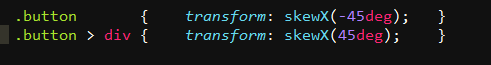
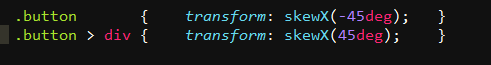
第二种方案是利用伪元素，把所有的样式（背景、边框等）应用到伪元素上，然后再对伪元素进行变形。
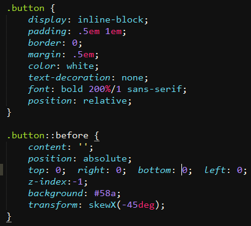
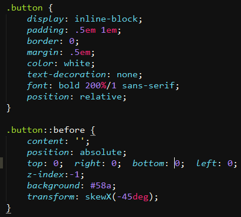
第二种方案的补充说明：我们希望伪元素保持良好的灵活性，可以自动继承其宿主元素的尺寸，甚至当宿主元素的尺寸是由其内容来决定时仍然如此。
一个简单的办法是给宿主元素应用position:relative样式，并为伪元素设置position:absolute，然后把所有的偏移量设置为0，以便让它在水平和垂直方向都拉伸至宿主
元素的尺寸。同时要注意此时生成的方块是在重叠内容上的，需要设置z-index值
菱形图片,这种效果起始是容器是菱形，原本认为只要将图片旋转就可以，但其实这种效果的图片还是正常放置的

第一种方案还是利用嵌套元素，对内容应用一次反向的rotate变形
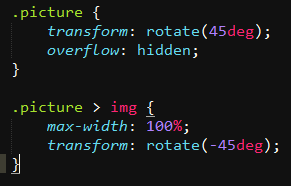
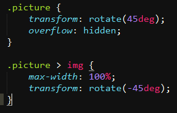
之所以会出现八角形，是由于我们的图片不够大的原因，我们想让图片的宽度与容器的对角线相等，而不是与边长相等，所以可以通过scale()变形放大一下
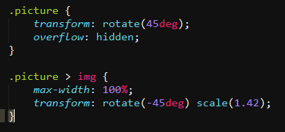
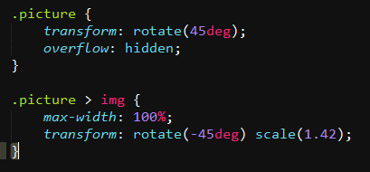
第三种方案是使用clip-path属性，剪切一个多边形。
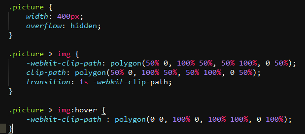
第二种方案只能处理正方形的图片，如果遇到非正方形的图片，效果就会严重的崩坏。
第三种方案的clip-path属性浏览器的支持程度还不好，写demo时polygon剪切多边形chorme支持私有前缀的写法，firefox不支持标准语法，也不支持私有前缀的写法。
第三种方案的clip-path属性浏览器的支持程度还不好，写demo时polygon剪切多边形chorme支持私有前缀的写法，firefox不支持标准语法，也不支持私有前缀的写法。
切角效果
Hey,focus!You're supposed to be looking at my corners,
not reading my text. The text is just placeholder!
第一种方案使用渐变，这种应该只能用背景颜色的切角，无法使用背景图片，其次单个线性渐变只能完成单个切角
background: linear-gradient(-45deg, transparent 15px, #58a 0);
background: linear-gradient(-45deg, transparent 15px, #58a 0);
Hey,focus!You're supposed to be looking at my corners,
not reading my text. The text is just placeholder!
第二种方案使用两个渐变来实现两个切角，这种应该是使用了CSS3的多背景语法，要同时注意设置background-size的尺寸
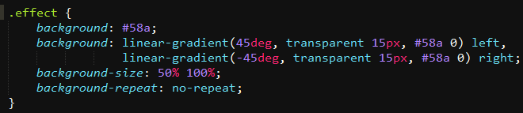
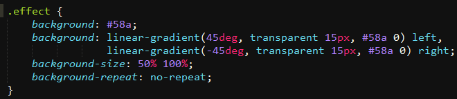
Hey,focus!You're supposed to be looking at my corners,
not reading my text. The text is just placeholder!
第三种方案是使用radical-gradient径向渐变，实现内圆切角。
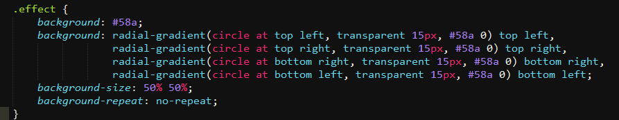
Hey,focus!You're supposed to be looking at my corners,
not reading my text. The text is just placeholder!
第四种方案还是clip-path，这种方案可以任意的剪切背景图片的切角。
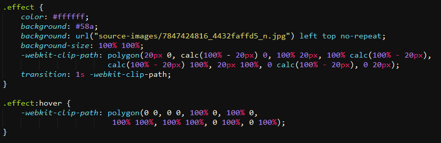
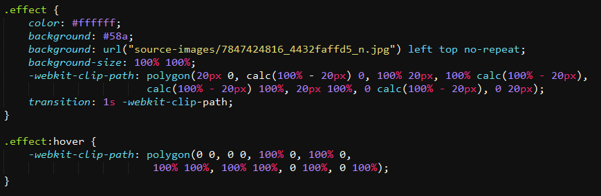
使用第四种方案仍要注意浏览器支持度。
梯形标签页
TRAPZOID111111
使用伪元素的3D转换来实现
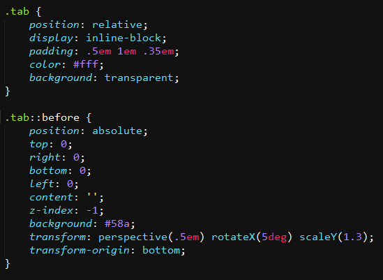
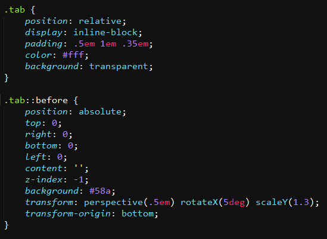
通过更改transform-origin属性就可以得到向不同方向倾斜的标签页